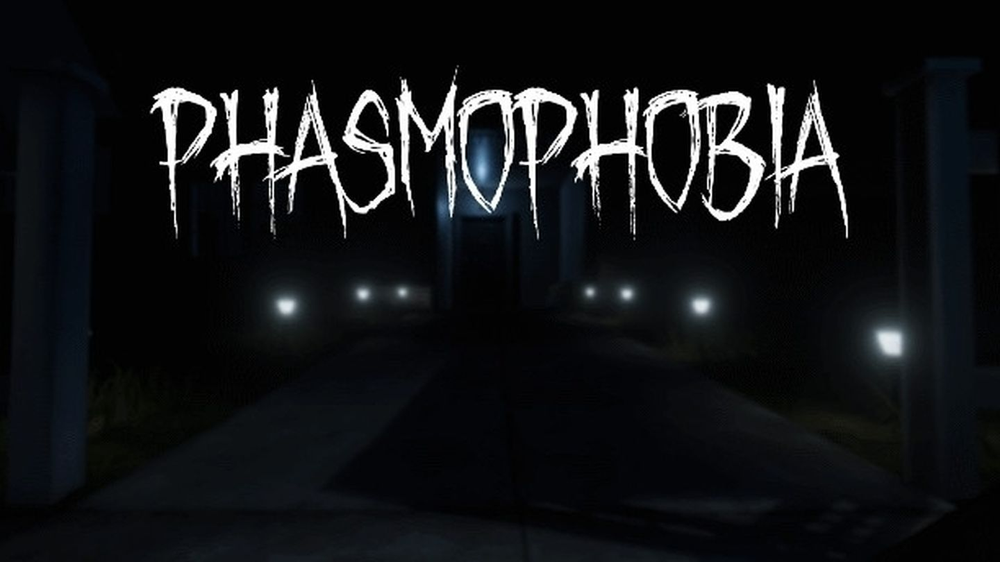

Red Dead Redemtion II

Red Dead Redemption 2 é un videoxogo de acción e aventura do 2018 desenvolto e publicado por Rockstar Games. O xogo é a terceira entrega na saga de videoxogos Red Dead e un precuela do xogo do 2010 xogo Red Dead Redemption. A historia é unha representación ficticia dos Estados Unidos en 1899 e segue as proezas do proscrito Arthur Morgan, un membro da banda de Van der Linde, e teñen que lidiar co decline Vello Oeste mentres tentan sobrevivir contra forzas de goberno, bandas rivais, e outros adversarios.
Requisitos
Lethal Company

Lethal Company é un xogo de terror de supervivencia cooperativo creado e desenvolvido por Zeekerss. O xogo desenvólvese nun universo post-apocalíptico retrofuturista, onde os xogadores asumen o papel de empregados contratados que traballan para unha corporación chamada "The Company", recollendo chatarra de lúas abandonadas e industrializadas, mentres teñen que evitar trampas, perigos ambientais e monstros. Foi lanzado en acceso anticipado o 23 de outubro de 2023.
Requisitos
Phasmophobia

Phasmophobia é un xogo de terror paranormal desenvolvido e publicado polo estudo de xogos indie británico Kinetic Games. Está baseado principalmente no popular pasatempo da caza de pantasmas. O xogo estivo dispoñible en acceso anticipado a través de Steam para Microsoft Windows con soporte de realidade virtual en setembro de 2020. O xogo recibiu unha gran popularidade ao mes seguinte debido a que moitos streamers e YouTubers coñecidos de Twitch xogaban, principalmente para a tempada de Halloween. O 15 de outubro do mesmo ano, o xogo foi o sexto xogo máis popular en Twitch.[2] Foi o xogo máis vendido en Steam a nivel mundial durante varias semanas de outubro a novembro de 2020.